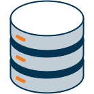

Node data management strategy
delivered in 2023
delivered in 2025
next: 30 Sept 2026
Supports the development of robust data management strategies within ELIXIR Nodes, focusing on best practices from ELIXIR's data management tools and services. Next delivery on 30 September 2026, co-located with the RDM Community event.
Module leads:
- Mijke Jetten (ELIXIR‑NL)
- Celia van Gelder (ELIXIR‑NL)
- RDM Community
Hub contact: Fabio Liberante